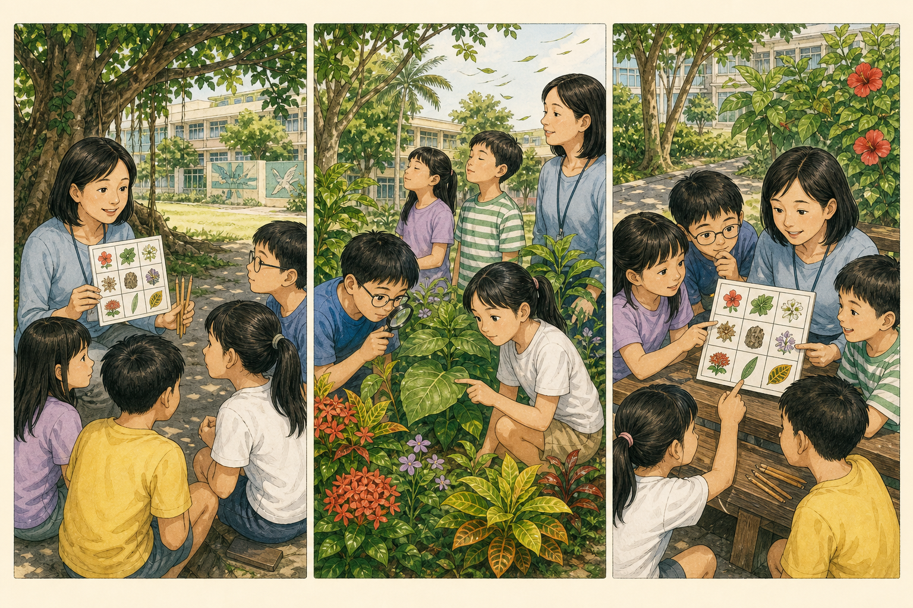

GAME 01 · CAMPUS BINGO
五感線索賓果
賓果格不是植物名稱，而是「比手掌大、葉緣有鋸齒、風吹會沙沙響、表面有光澤」等可觀察線索。

遊戲目標
- 從葉形、葉緣、葉脈、花色、果實與聲音找出多項線索。
- 用畫圖、位置與比較句證明發現，練習合作分工。
場地
教師事先巡過的花圃、草地、樹蔭或可見植物的走廊；劃定清楚活動邊界。
材料
每組 3×3 線索卡、夾板、鉛筆、色鉛筆、倒數計時器；可選放大鏡。全部可重複使用或黑白列印。
事前準備
巡查路線、移除會誘使觸摸危險植物的格子；依季節放入 9 個一定能找到的線索，並準備 2 個備用格。
30 分鐘時間分配
- 3 分 分組、界線與不採摘規則
- 5 分 示範「找線索＋畫證據」
- 14 分 小組校園尋找
- 5 分 核對賓果與證據分享
- 3 分 科學整理、收具洗手
遊戲步驟
- 每組選角色，讀完 9 格；先圈出只能看、可以聽、經教師允許才可輕觸的格子。
- 教師用一株植物示範：「我在司令臺旁看到心形葉；我畫葉基和位置，所以不是隨便猜。」
- 全組一起移動。每找到一格，記錄員畫特徵與地點；觸摸只由一人用一指輕碰教師指定的安全部位。
- 同一株最多完成 2 格，鼓勵比較多株植物。連成一線後仍可繼續找，時間到回集合點。
- 交換卡檢核：另一組能依地點和圖找到同一證據，該格才成立。
計分與合作
證據格 1 分、三格連線加 2 分、能用「都有……但是……」比較兩株再加 2 分。植物名稱猜對不另加分；全組角色都有發言才取得「合作葉」1 枚。最高分不是唯一目標，最後分享一個最有說服力的證據。
教師引導問題
- 這個特徵要從哪個角度才看得清楚？
- 如果不能摸，你還能用什麼證據？
- 同一種綠色，在陽光和樹蔭下有沒有不同？
- 別組如何重找到你說的那一株？
低年級簡化
用 2×3 圖像卡，只找顏色、大小、平滑／粗糙和明顯聲音；由教師帶整班走固定 4 站。
中年級標準
使用 3×3 卡，至少包含葉形、葉緣、葉脈、花或果、聲音與觸感；每格附一張速寫。
高年級進階
加入相反證據與測量尺度，例如「不是平行脈」「葉長約 8–12 公分」，並說明可能的誤判。
安全注意事項
不進花圃、不採摘、不攀爬；乳汁不明、有刺、可能有毒、長黴或有毛蟲的植物只遠觀。風吹落枝風險高或地面濕滑時改在走廊。活動後洗手。
科學知識整理
葉形、葉緣、葉脈與葉序是不同層次的線索；花果常受季節影響，聲音也受風速、葉片乾濕與大小影響。可靠辨識要結合多個特徵和位置紀錄。
簡易學習單
9 格線索：顏色／葉形／葉緣／葉脈／花果／大小／光澤／觸感／聲音。每格填「位置＋小圖＋我用的感官」；背面寫：我最有把握的證據是＿＿＿，因為＿＿＿；我還想重查＿＿＿。